GraphXR Projects The Projects page is your portal to create and manage individual GraphXR projects. It’s also where you review details of your GraphXR account, register questions and comments, and where admin users can access administrator functions. 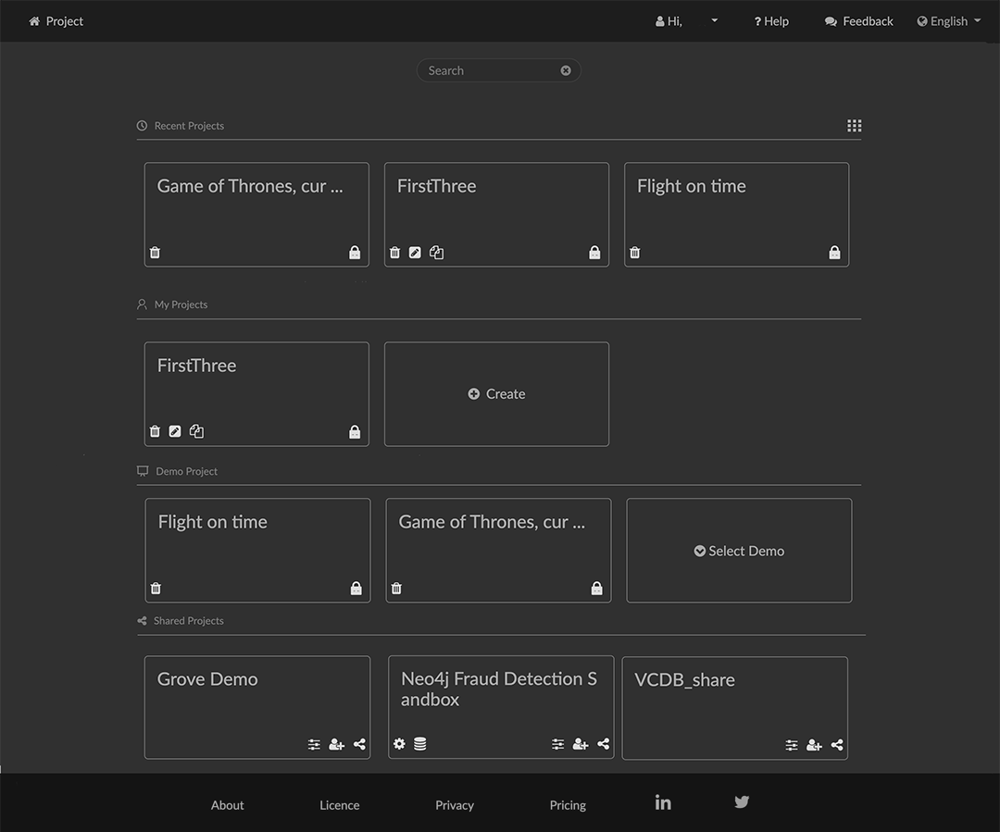 Project Page Organization Items at the top of the top of the Projects page include: The user menu, where you edit your GraphXR account settings or log out. 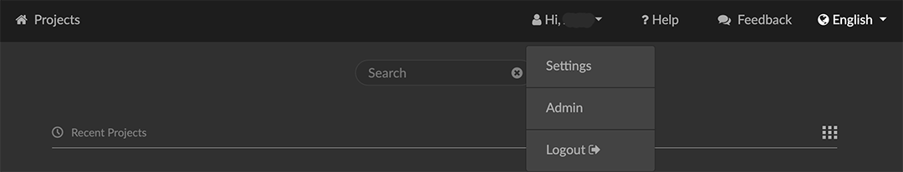 Select Settings to review your account details, change your password, or delete your account. Once you’ve made changes, click Update to update your account, or click Projects at the upper left of the browser to close the dialog without making any changes. 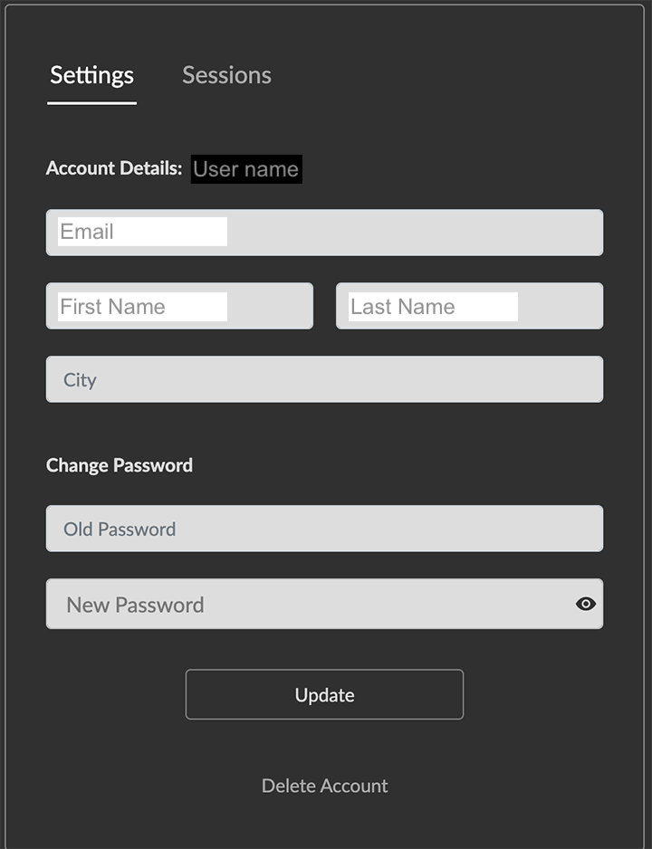 Select Logout to log out of GraphXR. Administrators of a multi-user account also have an Admin menu item that provides access to managing users and connected databases, as well as other administrative tasks. Click Feedback to log questions and comments for administrator response. Click Help to access learning resources and contact information. Click the version number at the bottom of the browser window to show release notes in a separate browser window. 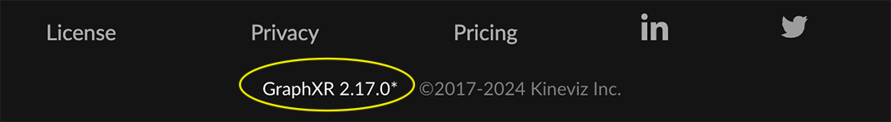 Use the language selector to switch between the default English or Chinese UI (or other localized languages which may be provided). 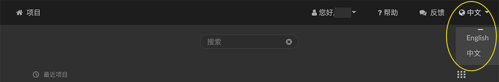 The body of the Projects page lets you create and manage your GraphXR projects: 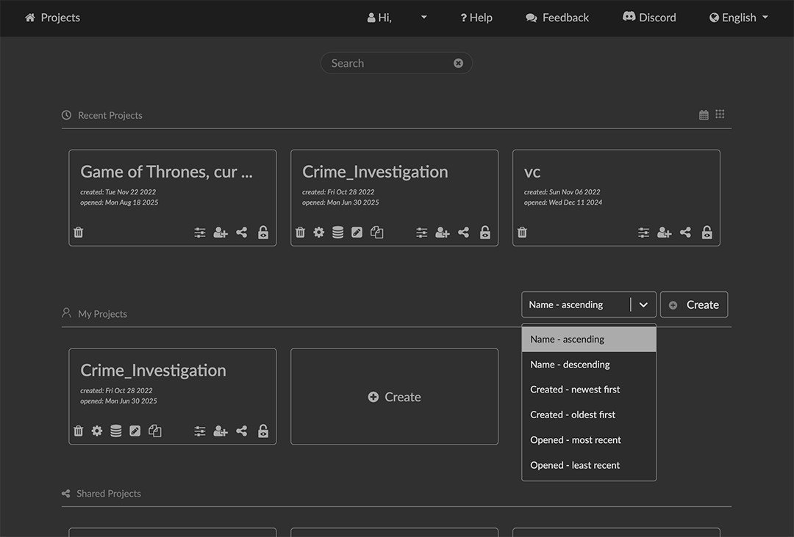 Use the Search bar at the top of the page to find one or more projects by name. Click the display icon to show projects in a more compact list, instead of the default tiles. 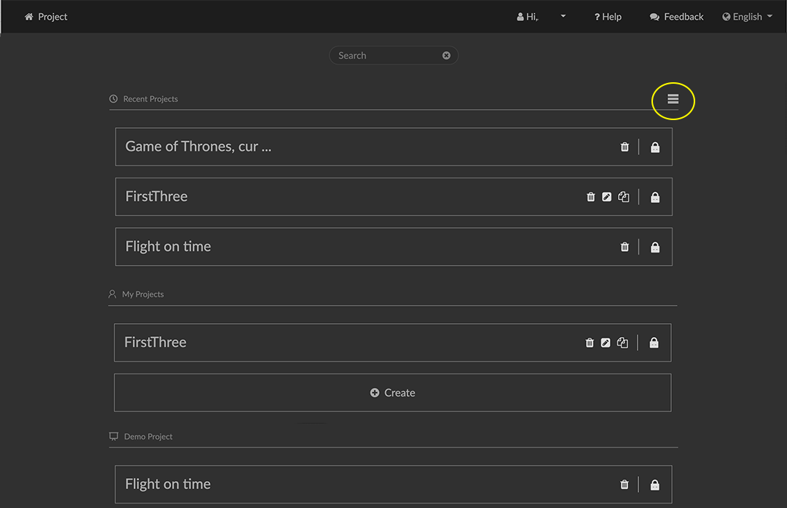 Projects are organized into the following sections: Recent Projects displays projects you have recently opened. My Projects lets you Create a new project, and shows projects you’ve created. Demo Projects provides a Select Demo dropdown to select a demo project from those available. Shared Projects shows projects that other users have created and shared with you. Explore a Demo Project To get started quickly with GraphXR you can explore a Demo project. Demo projects are limited to three projects which can have up to 500 nodes and edges and three views. You cannot share a demo project or export data views. To open a Demo project: Click a demo project tile, for example, the VC demo, to enter its project space. This demo includes venture capital investor data. It is connected to a Neo4j database. 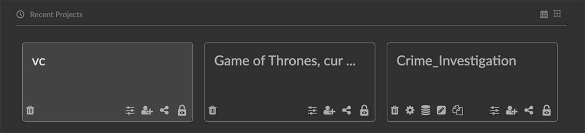 The project’s graph space is empty when you open it. You’ll either pull data from the connected database or load a saved data view. 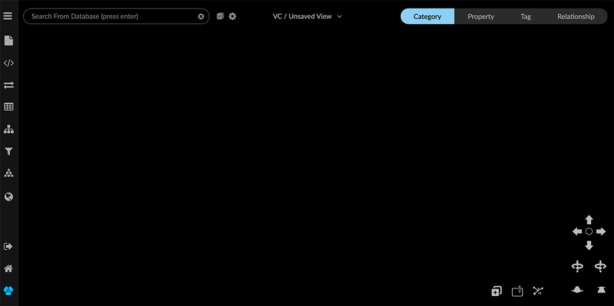 Click the Project menu item on the upper left side of the browser window. The Project panel opens, with the Views tab open. It includes thumbnail images for data views which have been saved (if any). A view menu at the top center of the project space indicates the view that’s currently loaded. The current view is listed as an Unsaved View in the VC project. 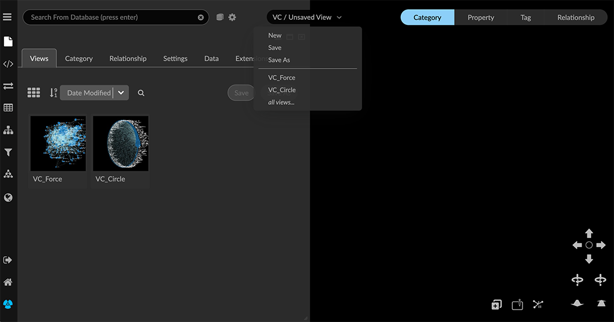 Now click the Category tab and Relationship tab to explore categories and relationships that are in the Neo4j database connected to the project. 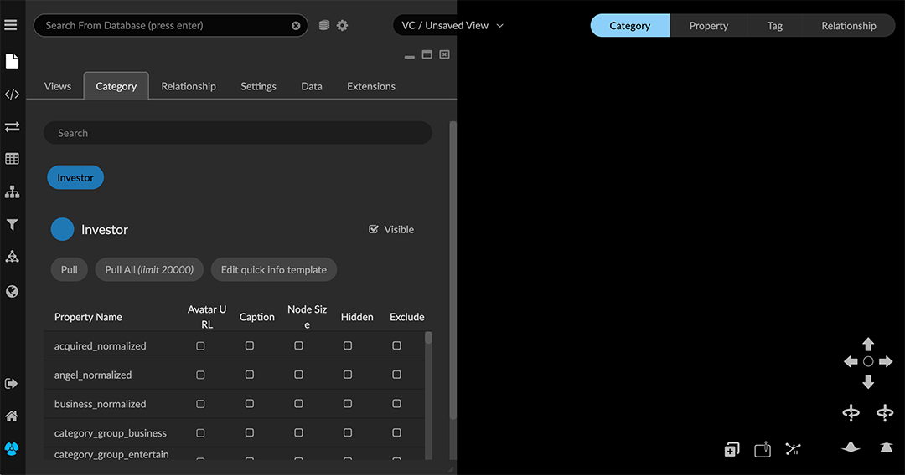 The VC demo uses a very simple schema such that nodes of just one Investor category are connected through edges of a single link_to relationship. A color has been assigned to the category and the relationship, and each includes a list of defined properties. Click the Pull button on the Investor category to quickly import 25 nodes of that category from the database. This is a quick way to import some data. You can also import more data from Neo4j. You can: Search the database. For example, in the search bar at the top left, we can search for any Investor with the name "Partner", then import some or all of the nodes found in the database into the graph. 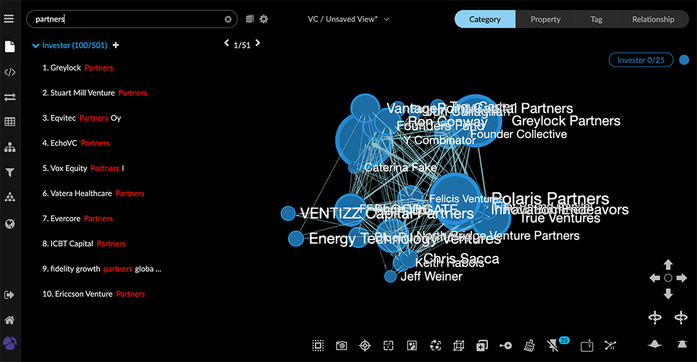 + Expand on relationships using GraphXR’s Expand function. It brings in additional nodes connected through relationships you select. To try this, click on one or more Investor nodes, then right click and choose Expand from the menu. 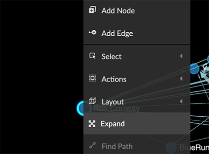 In the Expand with Relationships dialog, click the Expand button. 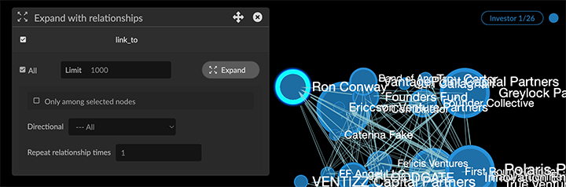 Additional nodes which are connected to the selected Investor node have been returned. 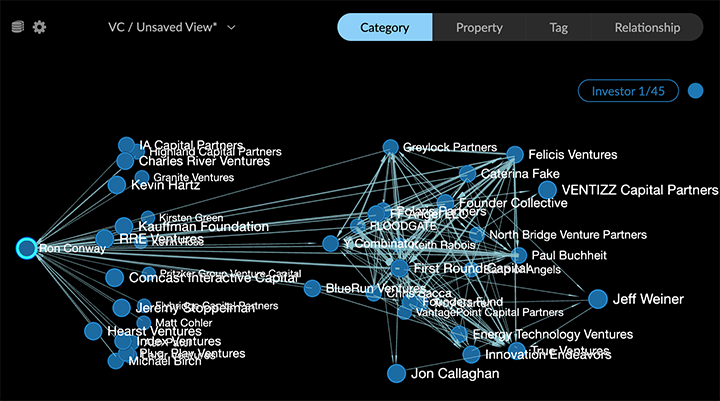 Query the database directly. Since the VC demo is connected to a Neo4j database, you can go to the Query panel and Cypher tab and run a simple example Cypher query. Click the Collection List arrow to display the sample query, and click on it to copy it to the Cypher query window. To bring in a sample of ten more nodes and their relationships, we can edit the LIMIT parameter to return ten nodes instead of 100. Then click the Run arrow. 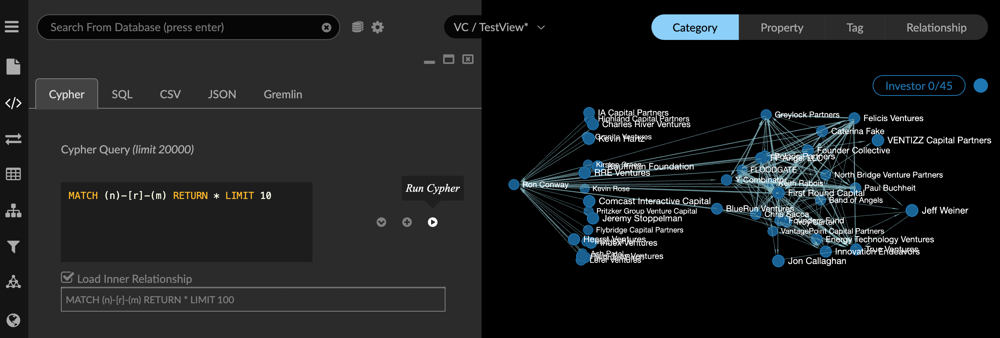 Now you can save the data view on the server so that when you return to this project, either after going back to the Projects page or logging out, your view will still be available. From the view menu, select Save As, enter a descriptive view name, and click Submit. Open the Project panel and View tab to see that the thumbnail of your saved view has been added. 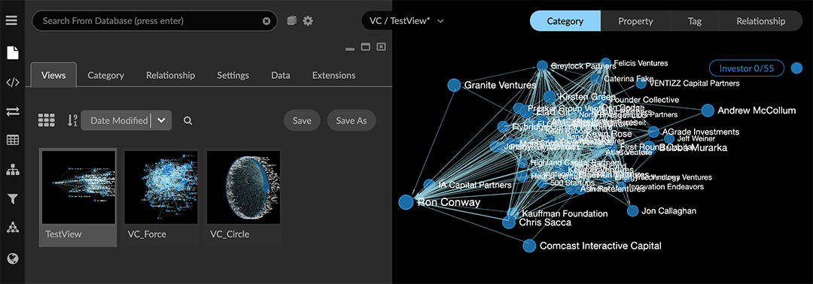 If you want to save a view, you must do it before exiting the project. Create a Project You can create and configure a new GraphXR project and either leave the project unconnected, or immediately connect to a Neo4j database. Create a stand-alone project In a standalone project (one that’s not connected to a Neo4j database) you can import and work with data in formats such as CSV, SQL, JSON, GraphXR’s GXRF and Snapshot files, and others. You can import a data file into the project simply by drag and drop, or use GraphXR’s Mapping Editor. To create a standalone project: In the Projects page, click the Create button or tile in the My Projects area. 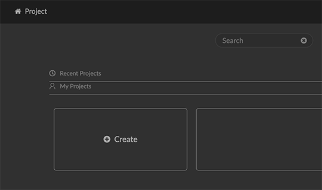 In the Project Name text box, enter a descriptive project name. Leave Config Neo4j Instance unchecked. 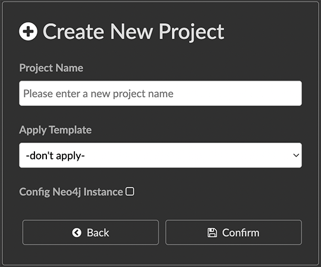 If project templates have been provided, you can optionally select one from the dropdown menu. Templates specify colors, icons and other settings so that they can be easily applied to more than one project. Click Confirm. The new project is automatically opened. To see that it now appears under My Projects, click the Home button to exit the project and return to the Projects page. Set project configuration A new project is configured according to the template used (if any) and a variety of default settings. You can configure project details at any time: Click the project’s Enable Share/Disable Share (Lock) icon to enable sharing of data views with another user. Share users you Invite have access only to that project and the data views that you share. 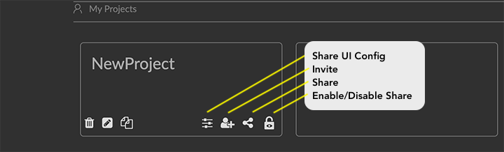 Use ShareUI Config to restrict share users' ability to navigate or edit project data. 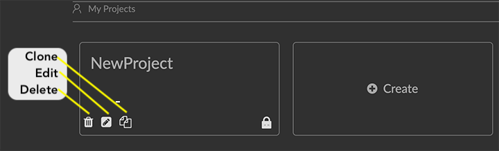 Click the Edit icon to edit project configuration. Click the Clone icon to duplicate the project. Click the Delete (trash can) icon to delete the project. Create a project connected to a Neo4j database Connect a new or existing project to an existing Neo4j graph database by specifying the database and server details. To create a project connected to a Neo4j database: In the Projects page, under My Projects click the Create button. Now click the Configure Neo4j Instance checkbox. Enter the information required to connect to your Neo4j database: 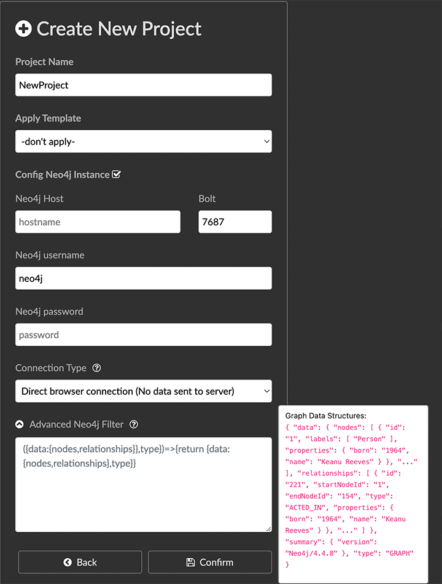 Project Name: Descriptive name, (e.g., the name of the Neo4j database). Neo4j DB Host: Host address, (e.g., a url such as localhost, or other host location). Do not include <<,https://,>> bolt://, or :(port number) here. Bolt Port: (e.g. 7687) Neo4j DB Username: DB user name Neo4j DB Password: DB password Connection Type: Choose one of the following: Browser Connection: GraphXR connects to the Neo4j DB directly through the browser. HTTPS is required to be on for Neo4j, and this is the preferred connection type. Through GraphXR server connection: Data flows from the Neo4j DB through a GraphXR server to the browser. In this mode you can share the project. HTTPS is optional for the Neo4j DB. Advanced Neo4j Filter: This enables you to specify data structures to be returned. Click Confirm. The project opens. 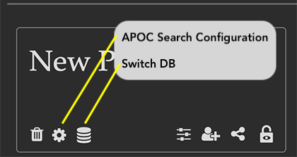 To see that the new project appears in My Projects click Home to return to the Projects page. You can now: Click the Settings icon, labeled APOC Search Index Config, to use Neo4j’s indexing plugin to configure the allowed search terms for the project. You can modify these search terms at any time. Click the project’s Switch DB icon to edit its Neo4j configuration. Click the project’s Enable Share/Disable Share (Lock) icon to enable sharing of data views with another user. Share users you Invite have access only to that project and its data views. Click ShareUI Config to restrict share users' ability to navigate or edit project data. Click on the project name to enter the project and begin pulling data from the Neo4j database. Click the Delete (trash can) icon to delete a project. This deletes only the GraphXR project, not its Neo4j database.